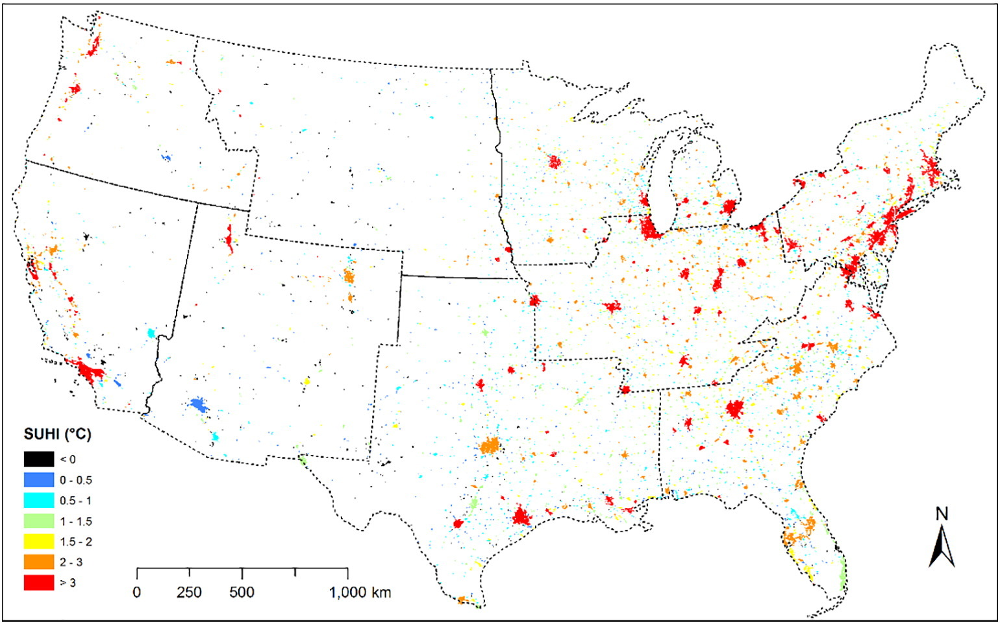
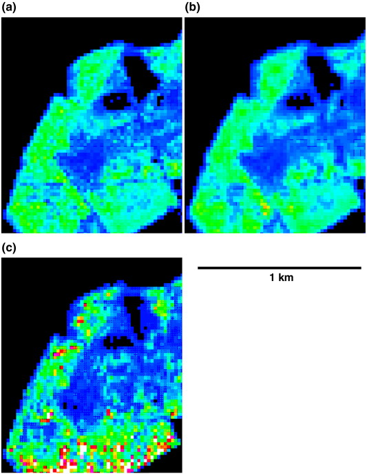

8 Week8 - Synthetic Aperture Radar (SAR) data
This class introduces the basic principle of synthetic aperture radar (SAR), two sensor types, SAR data background, SAR data value, SAR polarization, SAR background, differential interferometric synthetic aperture radar (DlnSAR), SAR data processing, SAR data fusion, SAR image fusion and other concepts.
This class also introduces how to use SAR data for change detection, including statistical test, threshold screening and ROC curve, image fusion and so on. Finally, a change detection algorithm based on SAR data is proposed, and an example is given.
8.1 SAR Data Analysis
Synthetic Aperture Radar (SAR) is a radar system that produces high-resolution images of the Earth’s surface by using the movement of the radar antenna to simulate a much larger aperture. SAR data can penetrate clouds and function during day and night, making it particularly useful in monitoring environmental and surface changes.
8.1.1 Key Concepts Covered:
SAR Sensors: We explored different SAR sensors, including Sentinel-1, and their capabilities in capturing radar signals.
SAR Polarization: The ability of SAR to capture data in multiple polarizations, such as HH, HV, VV, and VH, provides deeper insights into surface characteristics.
Interferometry: Techniques like InSAR and DInSAR were introduced, demonstrating how they are used to measure surface deformation by analyzing phase differences between radar images.
Data Fusion: We learned about combining SAR data with optical imagery to improve accuracy in classification tasks, which is especially useful in urban mapping and land cover change detection (Wang, Jun et. al, 20241).
8.1.2 Difference of other SAR(Shahzad et al., 20242)
| SAR | InSAR | DInSAR | PSInSAR |
|---|---|---|---|
| Synthetic Aperture Radar | Interferometric Synthetic Aperture Radar | Differential Interferometric Synthetic Aperture Radar | Persistent Scatterer Interferometric SAR |
|
|
|
|
8.2 SAR Data & Thermal Infrared Data for Surface Temperature Analysis
Surface temperature analysis is a key aspect of understanding environmental changes, particularly in urban areas and regions affected by climate change. By integrating Synthetic Aperture Radar (SAR) data with Thermal Infrared (TIR) data, we can achieve a more holistic understanding of surface temperature variations and their influencing factors.
8.2.1 Why Combine SAR and TIR?
Combining SAR and Thermal Infrared (TIR) data provides a comprehensive view of surface temperature variations and their driving factors. SAR captures surface properties like roughness, moisture, and vegetation structure, while TIR measures Land Surface Temperature (LST). This fusion allows for deeper environmental analysis and more accurate monitoring.
In urban heat island (UHI) studies, SAR data reveals urban structure and morphology, while TIR highlights temperature patterns. Together, they provide clearer insights into how urban features affect heat dynamics, supporting more effective urban planning.
Additionally, integrating SAR’s surface moisture measurements with TIR’s temperature data helps assess the link between moisture content and surface temperature. This is crucial for monitoring drought and land degradation, offering a fuller picture of environmental conditions.
8.2.2 Application for Integrating SAR and TIR Data
SAR data can provide a roughness index of the surface, which can be correlated with temperature patterns. For example, smoother surfaces like water bodies and urban concrete will reflect heat differently than rough surfaces like forests.
Urban Heat Island Detection:
- By correlating LST from TIR data with building density and surface composition from SAR data, we can identify and monitor UHIs over time. This combination helps detect how specific materials and urban planning contribute to elevated temperatures in cities (Li et al., 20193).
 Where SHUI is surface urban heat island. We can observed that larger urban areas display higher SUHI than smaller urban areas, indicating the increase of SUHI with the expansion of urban area size.
Climate Change Impact:
- The combined use of SAR and TIR data allows for long-term monitoring of land-use changes and their thermal effects. As landscapes shift from vegetation to urban development, LST tends to rise. Monitoring these changes with SAR’s ability to detect deforestation and TIR’s temperature monitoring capacity provides a complete picture of land transformation impacts (Balzter et al., 20074).

This figure illustrates how different terrain removal approaches, using both SAR and LIDAR, can provide comprehensive insights into vegetation carbon content. As shown by Balzter et al. (2007), combining X-VV interferometry DSM with LIDAR DSM and LIDAR DTM enhances the accuracy of carbon mapping. Such integration is crucial for monitoring carbon stocks and understanding the effects of land-use changes on carbon sequestration. By combining SAR and TIR data, long-term land-use monitoring becomes more precise, enabling better assessment of the environmental impact of urbanization and deforestation.
8.3 Reflection
This week’s exploration of SAR data and its integration with thermal infrared (TIR) data provided valuable insights into the broader applications of remote sensing for environmental monitoring. One key takeaway is the versatility of SAR in detecting surface characteristics such as roughness, moisture content, and urban structures, which, when combined with TIR data, offers a more comprehensive analysis of surface temperature variations. This multi-faceted approach is particularly useful in studying phenomena like urban heat islands and land-use changes.
Understanding the combination of SAR and TIR data also highlighted the potential for improving climate change monitoring. The ability to track both land surface temperature and environmental changes in urban areas and natural landscapes makes this method crucial for addressing real-world problems such as deforestation, drought, and urbanization impacts. The class has deepened my appreciation of how fusing different types of geospatial data can lead to more precise and actionable environmental insights, reinforcing the importance of integrating multiple datasets for comprehensive analysis in future geospatial projects.
8.4 Reference
Wang, Jun, Yanlong Wang, Guang Li, and Zhengyuan Qi. 2024. “Integration of Remote Sensing and Machine Learning for Precision Agriculture: A Comprehensive Perspective on Applications” Agronomy 14, no. 9: 1975. https://doi.org/10.3390/agronomy14091975↩︎
Shahzad, Naeem, and Xiaoli Ding. 2024. “An Improved Time Series SAR Interferometry (TSInSAR) for Investigating Earthquake-Induced Active Unstable Slopes (AUS) in Pakistan.” International Journal of Remote Sensing 45 (18): 6342–71. doi:10.1080/01431161.2024.2391106.↩︎
Li, X., Zhou, Y., Zhu, Z., and Asrar, G.R., 2019. The surface urban heat island response to urban expansion: A panel analysis for the conterminous United States. Remote Sensing of Environment, 235, p.111446.↩︎
Balzter, H., Rowland, C.S., and Saich, P., 2007. Forest canopy height and carbon estimation at Monks Wood National Nature Reserve, UK, using dual-wavelength SAR interferometry. Remote Sensing of Environment, 108(3), pp.224-239.↩︎